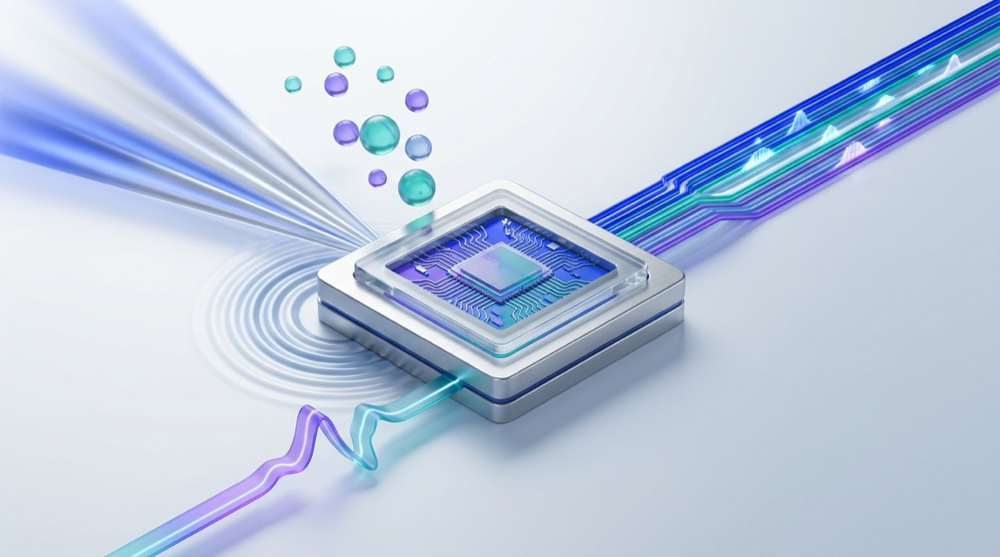

All-in-One Sensor Systems
Smart multifunctional platforms that sense, process, and respond to the environment on a single chip.

Why It Matters
Because every atom of a 2D material sits right on the surface, its electrical conductivity responds with extreme sensitivity to light, trace gas molecules, tiny mechanical pressure, and biological signals. Combining multiple sensing modes with local signal processing creates compact, intelligent all-in-one sensor systems.
ONE 1ab Research Focus
- Multimodal 2D sensor arrays detecting gas, light, strain/pressure, and biosignals
- Selective, low-power, room-temperature operation with fast recovery
- In-sensor computing systems integrating sensing, memory, and AI classification
How It Works
- Maximum Surface-to-Volume Ratio: 100% surface exposure enables parts-per-billion chemical detection and ultra-sensitive physical/optical transduction.
- Selective Surface Functionalization: Decorating 2D channels with tailored receptors or nanostructures lets each pixel distinguish specific target gases or biomarkers.
- Sense + Compute Integration: Pairing sensor arrays with 2D logic and neuromorphic circuits filters noise and recognizes patterns directly on chip.
Real-World Applications
Smart Healthcare & Diagnostics
Non-invasive breath, sweat, and vital-sign monitoring
Environmental & Safety Monitoring
Ultra-sensitive detection of toxic gases and air quality
Autonomous IoT Nodes
Self-contained smart sensors for smart homes, fabs, and cities